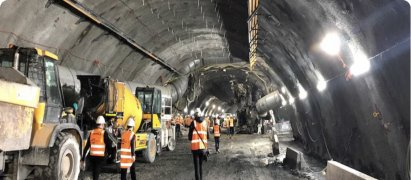
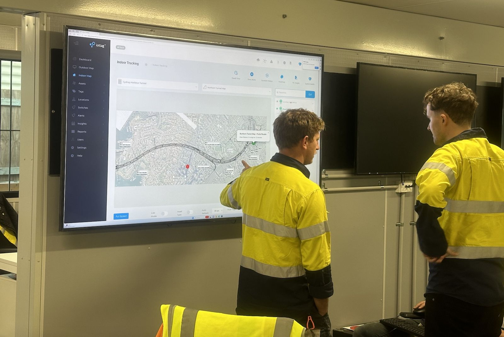
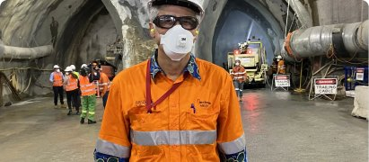

Featured case study 1
Create a live operational understanding of the operation.
Challenge ...
Solution ...
Outcome ...

Real projects. Real challenges. Real outcomes.
Explore how organisations across tunnelling, mining, construction, healthcare and critical infrastructure are using Operational Intelligence to improve safety, productivity and operational performance.

Create a live operational understanding of the operation.
Challenge ...
Solution ...
Outcome ...

Understand exposure before incidents occur.
Identify changing operational conditions, emerging risk trends and areas requiring intervention to support safer and more proactive operations.
Understand the factors influencing operational performance.
Gain visibility into production activities, equipment utilisation, material movement and operational bottlenecks to improve efficiency and performance.
Discover how purpose-built technology, end-to-end accountability and Operational Intelligence
help organisations improve visibility, safety and operational performance.